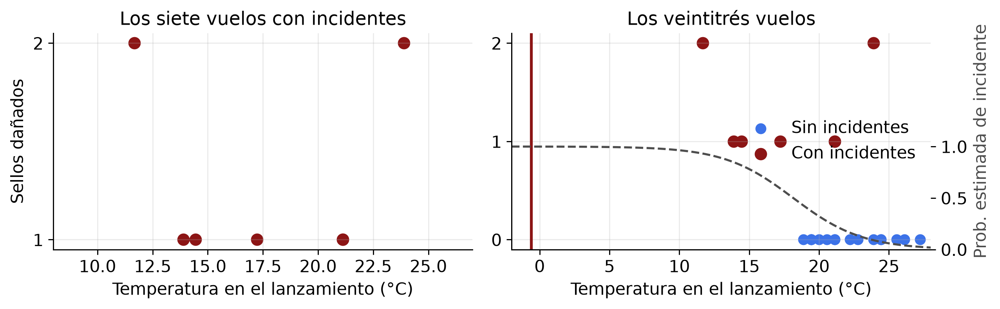
Visualización de datos y preprocesamiento
Apunte de la clase 4 de INF396
Este apunte reemplaza la parte de la clase 4 que no alcanzó a dictarse y sirve de lectura de estudio para toda la unidad. Cubre el tercer y cuarto punto del temario, visualización de datos y preprocesamiento. Las diapositivas están en este enlace y el apunte sigue su mismo orden, de modo que se pueden leer en paralelo. Las figuras se generan con el código que acompaña a cada sección, que se puede desplegar.
Dos reglas organizan la clase. La variable que porta la conclusión principal de un gráfico se asigna al canal perceptual más preciso. Y todo paso de preprocesamiento que estima un parámetro a partir de los datos pertenece al modelo y se ajusta únicamente con los datos de entrenamiento.
1 Un caso para empezar
El 28 de enero de 1986 el transbordador Challenger se lanzó a \(-0{,}6\,^\circ\)C. La noche anterior se discutió si la temperatura comprometía los sellos de los cohetes aceleradores. La evidencia considerada fueron los siete vuelos anteriores que habían presentado incidentes en los sellos, y sobre esos siete puntos no se aprecia relación entre temperatura y daño.
Los dieciséis vuelos sin incidentes ocurrieron todos con temperaturas altas y son los que establecen el contraste. Al excluirlos, la asociación deja de ser visible. Filtrar las filas es una decisión de preparación de datos, y determina qué puede observar el análisis. Además, la temperatura pronosticada quedaba fuera del rango de toda la experiencia previa, cuyo mínimo fue \(11{,}7\,^\circ\)C, condición bajo la cual ningún modelo ajustado sobre esos datos tiene soporte. El caso se retoma al final.
2 Visualización de datos
2.1 Gramática de gráficos
Un gráfico queda especificado por una composición de capas independientes: los datos (una tabla ordenada, cuya fila es la unidad de análisis), la estética (qué variable se asigna a qué canal, sea \(x\), \(y\), color, tamaño, forma o transparencia), la geometría (qué marca representa una fila, sea punto, línea, barra o área), la escala (lineal, logarítmica, discreta, temporal), el sistema de coordenadas y el facetado en paneles. Separar estas decisiones permite cambiar una sin tocar las otras.
La estética es una función \(a_k : \mathcal{X}_j \to \mathcal{C}_k\) que asigna la variable \(j\) al canal \(k\), y debe preservar la estructura de la escala de medida de la variable. Una variable nominal asignada a un canal ordenado, como la posición o la intensidad de color, induce un orden que los datos no contienen. Una variable continua asignada a un canal nominal, como la forma, descarta la información métrica.
2.2 Jerarquía de precisión perceptual
Cleveland y McGill (1984) midieron el error con que un observador estima magnitudes según el canal empleado. El orden, de mayor a menor precisión, es posición sobre un eje común, posición sobre ejes no alineados, longitud, ángulo y pendiente, área, volumen y saturación del color.
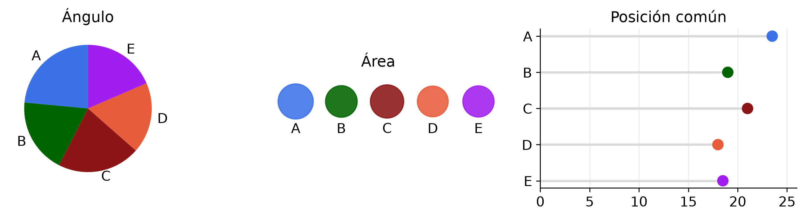
La diferencia entre A y C, de 2,5 puntos, se lee directamente sobre el eje común y es casi invisible en los otros dos paneles. En el panel del área la superficie sí es proporcional al valor, pero el lector juzga el radio, que crece como la raíz cuadrada, y por eso percibe diferencias menores que las reales. La consecuencia práctica es que la variable que porta la conclusión debe ir al canal de posición común, y el color, el área y el ángulo quedan para variables secundarias.
2.3 Escalas lineal y logarítmica
La escala logarítmica corresponde a \(x \mapsto \log x\) y convierte razones en diferencias. Es la escala correcta cuando el mecanismo es multiplicativo, como un crecimiento a tasa constante, o cuando el rango abarca varios órdenes de magnitud. En escala logarítmica la pendiente es la tasa de crecimiento relativo y distancias verticales iguales representan razones iguales. El eje debe rotularse con los valores originales, no con sus logaritmos.
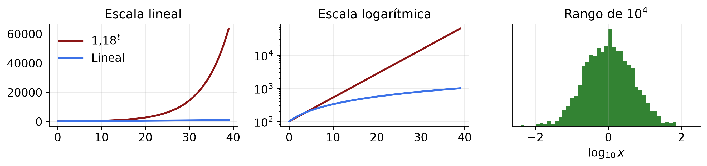
2.4 Color
La paleta se elige según la escala del dato. Una variable continua sin cero de referencia usa una paleta secuencial, con luminancia monótona. Una variable continua con cero significativo, como un estadístico con signo, usa una paleta divergente, simétrica respecto del punto neutro. Una variable nominal usa una paleta cualitativa, con tonos distinguibles y sin orden de luminancia.
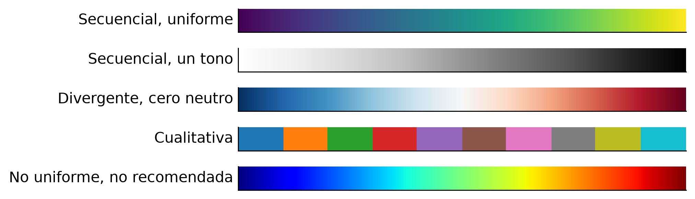
Cerca del 4 % de la población presenta alguna deficiencia en la percepción del rojo y el verde, de modo que una codificación que dependa de ese contraste resulta inaccesible para parte de la audiencia. La verificación práctica consiste en convertir la figura a escala de grises y comprobar que sigue siendo legible. En un mapa estadístico con signo, como un mapa de estadísticos \(t\), los límites de la paleta divergente deben ser simétricos, porque si el máximo y el mínimo se fijan a los valores observados el tono neutro deja de coincidir con el cero.
2.5 Datos multivariados
Con \(p\) variables y sólo dos canales espaciales, toda visualización de datos multivariados adopta una de cuatro estrategias: mostrar todos los pares (matriz de dispersión, mapa de calor, con \(O(p^2)\) paneles), añadir canales no espaciales (color, tamaño, forma, faceta, que saturan pasadas cuatro o cinco variables), proyectar a dimensión baja (PCA, MDS, \(t\)-SNE, UMAP, con pérdida controlada o no) o redefinir los ejes (coordenadas paralelas, que dependen del orden de los ejes). Ninguna domina a las otras.
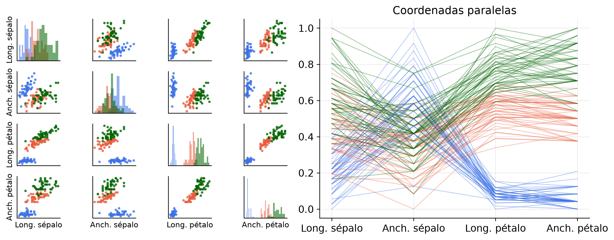
El mapa de calor de una matriz de correlación depende del orden de filas y columnas. Reordenar por agrupamiento jerárquico revela la estructura de bloques que el orden original oculta. El orden es una decisión de visualización y no un dato.
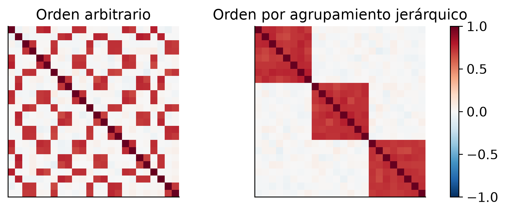
La proyección lineal de referencia es el biplot de componentes principales. La flecha de la variable \(k\) tiene coordenadas \(v_{kj}\sqrt{\lambda_j}\), que sobre datos estandarizados son la correlación entre esa variable y la componente \(j\). El ángulo entre dos flechas aproxima la correlación entre las variables y su longitud, la varianza representada en el plano. La lectura es válida sólo si las dos primeras componentes explican una fracción alta de la varianza. La construcción de PCA se desarrolla en la segunda parte.
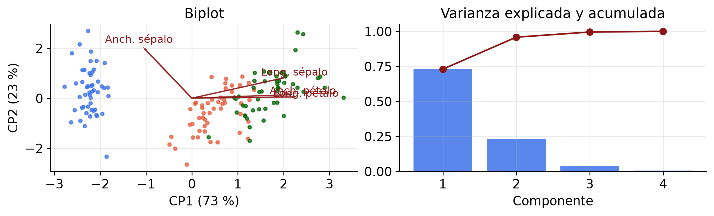
2.6 Proyecciones no lineales
Cuando los datos viven sobre una superficie curva, ninguna proyección lineal conserva la vecindad. Los métodos no lineales, como Isomap, \(t\)-SNE y UMAP, construyen un grafo de vecindad en el espacio original y buscan una disposición en el plano que lo reproduzca.
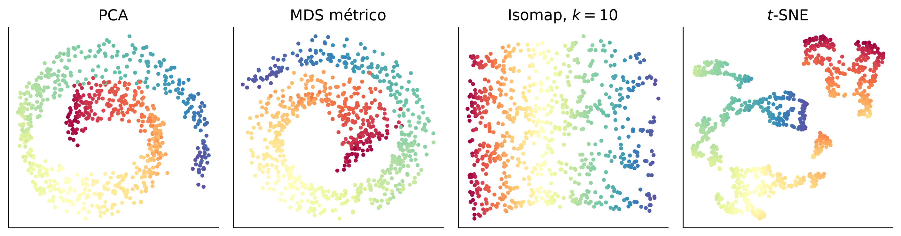
En una proyección no lineal la disposición del plano no corresponde a ninguna combinación de las variables originales, de modo que no toda lectura es legítima. Admiten lectura qué puntos quedaron juntos, la existencia de grupos separados si se confirma en el espacio original y la continuidad de una trayectoria dentro de una nube. No admiten lectura la distancia entre dos grupos alejados, el tamaño y la densidad aparente de cada nube, el significado de los ejes ni el número de grupos, que depende de los parámetros. La justificación de esta tabla se da al construir UMAP en la segunda parte.
2.7 Datos dependientes
En una serie de tiempo la autocorrelación \(\rho(h) = \gamma(h)/\gamma(0)\) mide la asociación entre \(y_t\) e \(y_{t+h}\) sin descontar los rezagos intermedios. La autocorrelación parcial descuenta esos rezagos y por eso identifica el orden de un proceso autorregresivo. La estacionalidad aparece como picos en múltiplos del período. La descomposición STL estima tendencia y estacionalidad con regresión local iterada, y el gráfico de subseries por mes expone la forma estacional que el gráfico de la serie oculta.
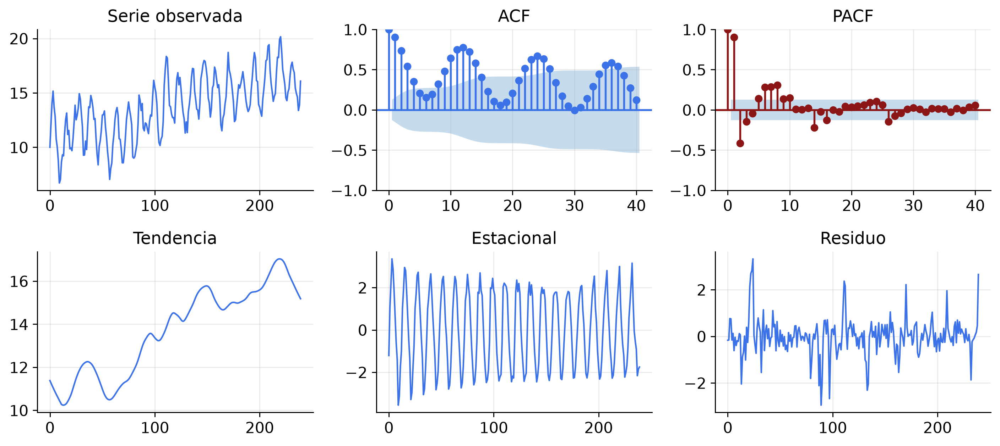
Las otras estructuras de dependencia comparten un mismo riesgo, que las observaciones no son independientes y el análisis que las trata como tales sobreestima la información disponible. En datos temporales, una partición aleatoria en entrenamiento y validación es inválida y hay que particionar por bloques de tiempo. En datos espaciales, el resultado depende de la partición administrativa elegida (problema de la unidad de área modificable). En datos jerárquicos, con grupos de tamaño \(m\) y correlación intraclase \(\rho_I\), el tamaño muestral efectivo es \(n_{\text{ef}} = n/(1 + (m-1)\rho_I)\). Con \(m = 10\) y \(\rho_I = 0{,}3\), mil observaciones equivalen a doscientas setenta independientes. Esta fórmula reaparece en la unidad de inferencia como efecto de diseño.
3 Preprocesamiento
3.1 El flujo y la fuga de información
Todo paso que estima un parámetro a partir de los datos es parte del modelo. La estandarización estima \(\hat\mu\) y \(\hat\sigma\); la imputación por mediana estima un cuantil; la codificación por objetivo estima \(\mathbb{E}[Y \mid c_k]\); la selección de variables estima un subconjunto; PCA estima una base; la discretización estima puntos de corte. Si cualquiera de estos parámetros se estima con la muestra completa antes de particionar, la estimación del error de generalización queda sesgada hacia abajo. El fenómeno se denomina fuga de información.
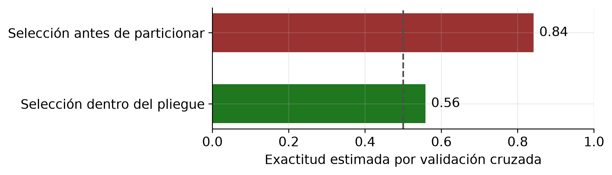
La herramienta que garantiza la regla es el Pipeline de scikit-learn, donde fit se ejecuta sólo sobre el pliegue de entrenamiento y transform se aplica al de validación con los parámetros ya estimados.
num = Pipeline([("imp", SimpleImputer(strategy="median", add_indicator=True)),
("esc", StandardScaler())])
cat = Pipeline([("imp", SimpleImputer(strategy="most_frequent")),
("cod", OneHotEncoder(handle_unknown="infrequent_if_exist", min_frequency=0.01))])
prep = ColumnTransformer([("num", num, cols_num), ("cat", cat, cols_cat)], remainder="drop")
modelo = Pipeline([("prep", prep), ("clf", LogisticRegression(max_iter=2000))])3.2 Depuración
Los problemas habituales y su tratamiento son los siguientes. Los duplicados exactos se detectan por clave repetida y se eliminan dejando registro del número. Los duplicados aproximados requieren similitud de cadenas y resolución de entidades. Las violaciones de dominio (rango, catálogo, expresión regular) se marcan como faltantes. Las inconsistencias entre columnas se detectan con reglas lógicas declaradas y marcan el registro completo. Los códigos centinela, como \(-99\) o \(9999\), se convierten a nulo. Las fechas imposibles se detectan por orden temporal. Las unidades mezcladas aparecen como multimodalidad en la marginal.
Toda corrección es una operación registrada sobre los datos originales, nunca una edición manual del archivo, de modo que el conjunto depurado sea función determinista del conjunto crudo. La forma más limpia es declarar las reglas una vez y producir dos salidas, el informe de violaciones y el conjunto depurado.
import polars as pl
REGLAS = [
(pl.col("edad").is_between(0, 120), "edad fuera de dominio"),
(pl.col("vef") > 0, "espirometría no positiva"),
(pl.col("fecha_alta") >= pl.col("fecha_ingreso"), "alta anterior al ingreso"),
]
df = df.with_columns([pl.when(cond).then(pl.lit(0)).otherwise(pl.lit(1)).alias(f"viola_{i}")
for i, (cond, _) in enumerate(REGLAS)])
informe = df.select(pl.col("^viola_.*$").sum())
limpio = df.filter(pl.sum_horizontal(pl.col("^viola_.*$")) == 0)El caso de las unidades mezcladas merece atención porque el histograma no lo resuelve. Dos columnas de peso pueden ser bimodales por razones distintas, una porque mezcla kilogramos con libras y otra porque registra adultos y niños. En escala logarítmica la separación entre modos es el logaritmo de su cociente. Ese cociente se estima ajustando una mezcla de dos normales y su incertidumbre por bootstrap. Si el intervalo contiene un factor de conversión conocido, fijado antes de mirar los datos, la columna requiere corrección; si no contiene ninguno, lo correcto es marcar la columna y consultar la fuente, nunca dividir por el cociente estimado.
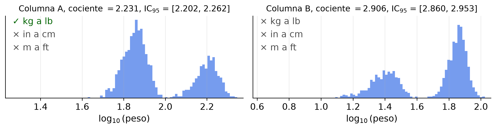
3.3 Integración
Unir tablas introduce tres riesgos. El cambio de granularidad, porque una unión uno a muchos multiplica filas y rompe la independencia. El conflicto de esquema, porque dos fuentes usan la misma etiqueta con distinto significado o unidad. Y la fuga temporal, porque la tabla incorporada puede contener información posterior al instante de la predicción. La unión por proximidad temporal hacia atrás (join_asof con strategy="backward") incorpora una serie usando sólo el último valor disponible antes del evento; la unión ordinaria por identificador usa el futuro.
3.4 Imputación
Sea \(x\) con \(m\) valores faltantes de \(n\) bajo un mecanismo completamente aleatorio. La imputación por la media observada entrega \[\hat\sigma^2_{\text{imp}} = \frac{n - m - 1}{n - 1}\,\hat\sigma^2_{\text{obs}},\] porque las \(m\) observaciones imputadas contribuyen con desviación nula. Con un 30 % de faltantes la varianza estimada se reduce cerca de un 30 % y toda inferencia posterior resulta anticonservadora. La imputación por la media preserva la media y sesga la varianza, la covarianza y la forma de la distribución. Es admisible sólo cuando la proporción de faltantes es despreciable, situación en la que cualquier método sirve.
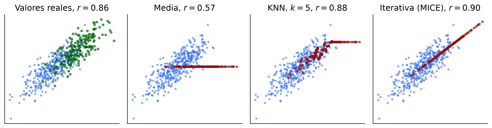
La imputación simple trata los valores imputados como si fueran observados y subestima la incertidumbre. La imputación múltiple genera \(M\) conjuntos completos, ajusta el modelo en cada uno y combina con las reglas de Rubin, \[T = \bar{U} + \Big(1 + \tfrac{1}{M}\Big) B,\] donde \(\bar{U}\) es la varianza promedio dentro de cada imputación y \(B\) la varianza entre imputaciones, que cuantifica la incertidumbre por no haber observado el dato. La imputación simple corresponde a \(B = 0\).
3.5 Reducción de datos
Reducir filas es legítimo con garantías conocidas. El muestreo aleatorio simple es insesgado con error \(O(n^{-1/2})\). El muestreo estratificado tiene varianza menor a igual \(n\) y es la opción para clases desbalanceadas. El muestreo con reserva procesa un flujo en una pasada. La agregación es exacta si la consulta es aditiva. La agregación previa es la reducción que más información descarta, porque elimina la variabilidad interna de los grupos y, por la paradoja de Simpson, puede invertir el signo de la asociación observada.
3.6 Regresión lineal y penalización
Todo lo que sigue opera sobre un modelo de regresión. Con \(p\) predictores el modelo lineal postula \(y_i = \beta_0 + \beta_1 x_{i1} + \cdots + \beta_p x_{ip} + \varepsilon_i\) con \(\mathbb{E}(\varepsilon_i) = 0\), o en forma matricial \(\mathbf{y} = \mathbf{X}\boldsymbol\beta + \boldsymbol\varepsilon\). Lineal se refiere a los parámetros y no a las variables, de modo que \(y = \beta_0 + \beta_1 x + \beta_2 x^2 + \varepsilon\) es lineal y \(y = \beta_0 e^{\beta_1 x} + \varepsilon\) no lo es.
El criterio de mínimos cuadrados elige el \(\boldsymbol\beta\) que minimiza \(\|\mathbf{y} - \mathbf{X}\boldsymbol\beta\|_2^2\). Derivando e igualando a cero se obtienen las ecuaciones normales y su solución, \[\mathbf{X}^{\mathsf{T}}(\mathbf{y} - \mathbf{X}\hat{\boldsymbol\beta}) = \mathbf{0} \qquad\Longrightarrow\qquad \hat{\boldsymbol\beta} = (\mathbf{X}^{\mathsf{T}}\mathbf{X})^{-1}\mathbf{X}^{\mathsf{T}}\mathbf{y},\] válida cuando las columnas son linealmente independientes y \(n > p\). La primera ecuación dice que el residuo es ortogonal a toda columna de \(\mathbf{X}\), de modo que \(\hat{\mathbf{y}}\) es la proyección ortogonal de \(\mathbf{y}\) sobre el espacio generado por los predictores. Bajo el modelo, \(\hat{\boldsymbol\beta}\) es insesgado y \(\operatorname{Var}(\hat{\boldsymbol\beta}) = \sigma^2(\mathbf{X}^{\mathsf{T}}\mathbf{X})^{-1}\). La unidad de inferencia muestra que minimizar la suma de cuadrados equivale a maximizar la verosimilitud cuando el error es normal de varianza constante.
Cuando las columnas son casi colineales, \(\mathbf{X}^{\mathsf{T}}\mathbf{X}\) está mal condicionada y la varianza se dispara. El estimador sigue siendo insesgado y deja de ser útil. La penalización añade un término que restringe la magnitud de los coeficientes, \[\hat{\boldsymbol\beta}_\lambda = \arg\min_{\boldsymbol\beta} \;\tfrac{1}{2n}\|\mathbf{y} - \mathbf{X}\boldsymbol\beta\|_2^2 + \lambda\,\Omega(\boldsymbol\beta), \qquad \Omega = \|\cdot\|_2^2 \;\text{(cresta)} \;\text{o}\; \|\cdot\|_1 \;\text{(Lasso)}.\] El estimador resultante es sesgado por construcción y se justifica con la descomposición \(\mathrm{ECM} = \mathrm{sesgo}^2 + \mathrm{varianza}\) de la unidad 2. El sesgo introducido es pequeño frente a la reducción de varianza que produce. El parámetro \(\lambda\) se estima por validación cruzada, luego es un parámetro estimado a partir de los datos y queda sujeto a la regla del flujo.
3.7 Transformaciones de escala
La estandarización \((x - \hat\mu)/\hat\sigma\) es apropiada con distribuciones aproximadamente simétricas; la transformación mínimo-máximo, con rango conocido y acotado; la robusta \((x - \hat{Q}_2)/\widehat{\text{IQR}}\), con valores extremos; la de cuantiles \(\Phi^{-1}(F_n(x))\), con forma arbitraria y \(n\) grande; la de Yeo-Johnson, con asimetría, y admite valores negativos. Los métodos basados en distancia y los penalizados por norma no son invariantes a la escala de las columnas. Los árboles y sus combinaciones sí lo son, porque sólo usan el orden dentro de cada variable.
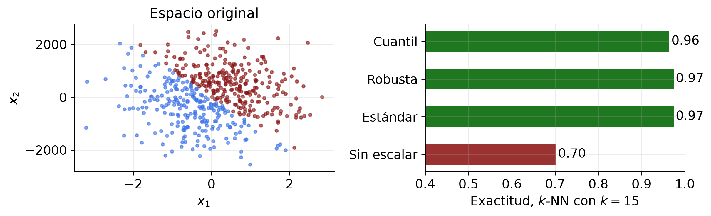
3.8 Extracción y selección de características
La selección entrega un subconjunto \(S \subseteq \{1,\ldots,p\}\) y conserva el significado original de las variables; la extracción entrega coordenadas nuevas \(\mathbf{z} = g(\mathbf{x}) \in \mathbb{R}^k\). Los métodos de selección se clasifican en filtros (asociación marginal con \(Y\), costo \(O(p)\), ignoran interacciones), envolturas (desempeño del modelo, costo alto, riesgo de sobreajuste) y embebidos (penalización dentro del ajuste). Un filtro marginal descarta variables cuyo efecto sólo aparece en combinación; con \(y = x_1 \oplus x_2\) ambas variables tienen asociación marginal nula con \(y\) y son conjuntamente determinantes.
El Lasso produce ceros exactos porque \(|\beta_j|\) no es diferenciable en cero. La condición de optimalidad es \(\tfrac{1}{n}\mathbf{x}_j^{\mathsf{T}}(\mathbf{y} - \mathbf{X}\hat{\boldsymbol\beta}) = \lambda\,s_j\) con \(s_j = \operatorname{sgn}(\hat\beta_j)\) si \(\hat\beta_j \neq 0\) y \(s_j \in [-1,1]\) si \(\hat\beta_j = 0\). Ese intervalo permite anular \(\hat\beta_j\). Bajo penalización \(\ell_2\) la condición análoga es \(\tfrac{1}{n}\mathbf{x}_j^{\mathsf{T}}\mathbf{r} = \lambda\beta_j\), que se satisface con \(\beta_j = 0\) únicamente cuando la correlación residual es exactamente nula, de modo que la regresión de cresta contrae sin anular.
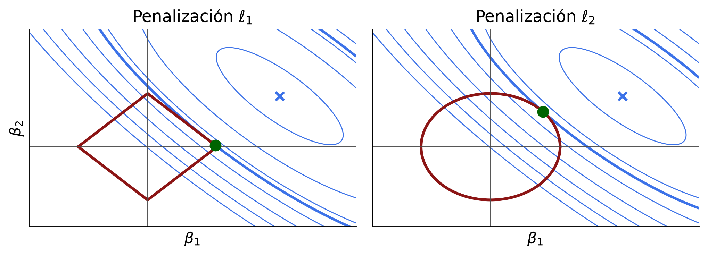
Entre dos variables casi colineales el Lasso elige una de manera esencialmente arbitraria y la elección cambia con la muestra. La frecuencia de selección sobre remuestreos bootstrap es una medida de estabilidad que un único ajuste no entrega.
3.9 Análisis de componentes principales
Dos variables correlacionadas ocupan una franja alargada y casi toda la información está en la dirección larga de esa franja. PCA elige la dirección \(\mathbf{v}_1\) que hace los residuos de proyección lo más cortos posible en promedio, y esa dirección coincide con la de máxima varianza.
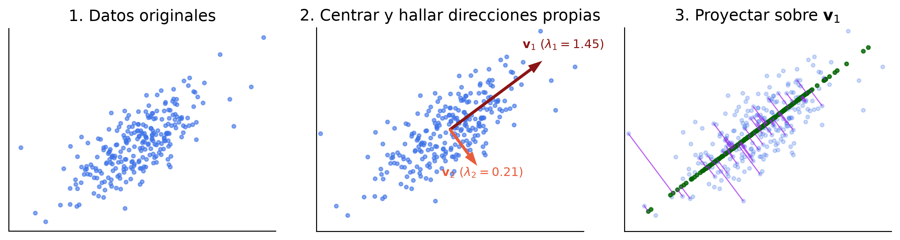
El cálculo tiene cuatro pasos. Centrar, \(\tilde{\mathbf{x}}_i = \mathbf{x}_i - \bar{\mathbf{x}}\), porque sin centrar la primera componente apunta al centroide y no describe variabilidad. Formar la covarianza \(\mathbf{S} = \frac{1}{n-1}\tilde{\mathbf{X}}^{\mathsf{T}}\tilde{\mathbf{X}}\), simétrica y con valores propios reales no negativos. Diagonalizar, \(\mathbf{S} = \mathbf{V}\boldsymbol\Lambda\mathbf{V}^{\mathsf{T}}\) con \(\lambda_1 \ge \cdots \ge \lambda_p \ge 0\). Proyectar, \(\mathbf{z}_i = \mathbf{V}_k^{\mathsf{T}}\tilde{\mathbf{x}}_i\), quedándose con las \(k\) primeras columnas. Cada \(\lambda_j\) es la varianza de los datos a lo largo de \(\mathbf{v}_j\) y, como la traza se conserva bajo cambio de base ortogonal, \(\sum_j \lambda_j = \operatorname{tr}(\mathbf{S})\), de donde la proporción de varianza explicada por \(\mathbf{v}_j\) es \(\lambda_j / \sum_l \lambda_l\). En la práctica no se forma \(\mathbf{S}\) sino la descomposición en valores singulares \(\tilde{\mathbf{X}} = \mathbf{U}\boldsymbol\Sigma\mathbf{V}^{\mathsf{T}}\), que entrega los mismos \(\mathbf{V}\) con \(\lambda_j = \sigma_j^2/(n-1)\).
Xc = P2 - P2.mean(axis=0) # 1. centrar
S = np.cov(Xc, rowvar=False) # 2. covarianza
lam, V = np.linalg.eigh(S) # 3. diagonalizar
lam, V = lam[::-1], V[:, ::-1] # de mayor a menor
Z = Xc @ V[:, :1] # 4. proyectar sobre v1
print("var(Z) = %.3f lambda_1 = %.3f" % (Z.var(ddof=1), lam[0]))
print("tr(S) = %.3f suma de valores propios = %.3f" % (np.trace(S), lam.sum()))
print("proporción explicada por v1 = %.3f" % (lam[0]/lam.sum()))var(Z) = 1.445 lambda_1 = 1.445
tr(S) = 1.658 suma de valores propios = 1.658
proporción explicada por v1 = 0.872Tres formulaciones tienen la misma solución: maximizar la varianza \(\max_{\|\mathbf{v}\|=1} \mathbf{v}^{\mathsf{T}}\mathbf{S}\mathbf{v}\) sucesivamente ortogonal, minimizar el error de reconstrucción \(\sum_i \|\mathbf{x}_i - \mathbf{V}_k\mathbf{V}_k^{\mathsf{T}}\mathbf{x}_i\|_2^2\), y aproximar \(\mathbf{X}\) por una matriz de rango \(k\) en norma de Frobenius. El teorema de Eckart, Young y Mirsky establece que si \(\mathbf{X} = \mathbf{U}\boldsymbol\Sigma\mathbf{V}^{\mathsf{T}}\), el minimizador es \(\mathbf{X}_k = \mathbf{U}_k\boldsymbol\Sigma_k\mathbf{V}_k^{\mathsf{T}}\) y el error vale \(\sum_{j>k}\sigma_j^2\). Maximizar varianza y minimizar error de reconstrucción son el mismo problema porque la varianza total se reparte entre lo retenido y lo descartado.
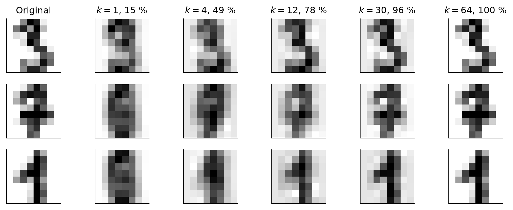
Sin estandarizar, la primera componente es prácticamente la variable de mayor varianza numérica, con independencia de su relevancia. PCA sobre la matriz de correlación, es decir con estandarización previa, es el procedimiento por omisión salvo que todas las columnas compartan unidad y esa unidad sea significativa. Para elegir el número de componentes, el umbral de varianza acumulada es arbitrario. El análisis paralelo de Horn compara el espectro observado con el esperado bajo independencia y retiene las componentes que lo superan.
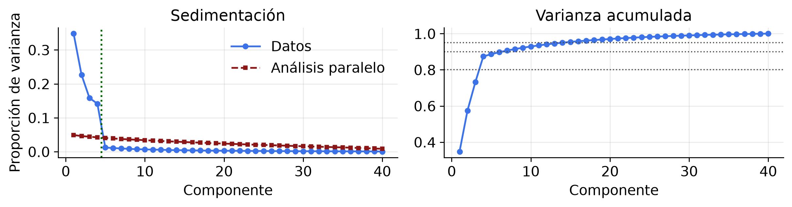
3.10 Proyecciones aleatorias y la maldición de la dimensión
Cuando \(p\) es muy grande existe una alternativa a PCA que no requiere estimar \(\mathbf{S}\). El lema de Johnson y Lindenstrauss establece que para todo \(0 < \varepsilon < 1\) y todo conjunto de \(n\) puntos en \(\mathbb{R}^p\) existe una aplicación lineal \(f : \mathbb{R}^p \to \mathbb{R}^k\) con \(k = O(\varepsilon^{-2}\log n)\) que conserva todas las distancias entre pares dentro de un factor \(1 \pm \varepsilon\). La dimensión de llegada depende de \(\log n\) y no de \(p\); con \(n = 10^6\) y \(\varepsilon = 0{,}1\), la cota entrega \(k\) del orden de algunos miles, sea \(p = 10^4\) o \(p = 10^7\). Una matriz gaussiana aleatoria realiza esa aplicación con alta probabilidad.
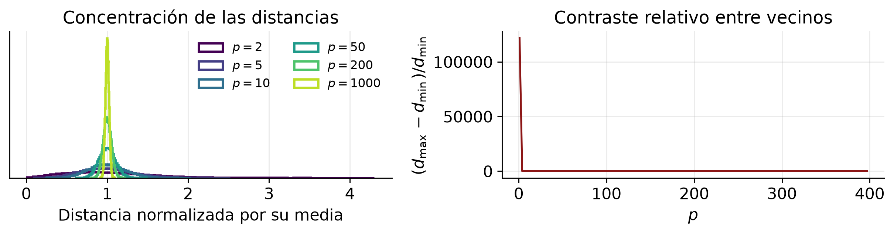
Bajo independencia entre coordenadas, \(\|\mathbf{x}\|_2\) se concentra en \(\sqrt{p}\) con desviación \(O(1)\), de modo que el concepto de vecindad pierde contenido y con él los métodos basados en distancia. Ésta es la maldición de la dimensión. Los datos reales suelen tener dimensión intrínseca mucho menor que \(p\), y esa estructura es la que los métodos de reducción explotan.
3.11 UMAP y la reducción no lineal
PCA busca la mejor combinación lineal de las variables. Dos anillos concéntricos tienen estructura radial y ninguna combinación lineal la captura; los métodos no lineales construyen coordenadas como la distancia al centro. UMAP no proyecta. Construye un grafo de vecindad en el espacio original y luego busca una disposición en el plano que reproduzca ese grafo.
En primer lugar se forma el grafo de los \(k\) vecinos más cercanos de cada punto. En segundo lugar se asigna a cada arista un peso difuso \(w_{ij} = \exp(-(d_{ij} - \rho_i)/\sigma_i)\), donde \(\rho_i\) es la distancia al vecino más próximo y \(\sigma_i\) se ajusta para que los pesos de cada punto sumen \(\log_2 k\). Así, un punto en zona rala considera cercanos a vecinos más lejanos que un punto en zona densa, y esa normalización local es lo que permite tratar densidades heterogéneas. En tercer lugar se define un peso análogo entre las posiciones del plano, \(q_{ij} = (1 + a\|\mathbf{y}_i - \mathbf{y}_j\|_2^{2b})^{-1}\), y se minimiza la entropía cruzada entre ambos grafos, \[\mathcal{L} = \sum_{i<j} \Big[ w_{ij}\log\tfrac{w_{ij}}{q_{ij}} + (1-w_{ij})\log\tfrac{1-w_{ij}}{1-q_{ij}}\Big].\] El primer término atrae a los pares que son vecinos en el original y el segundo repele a los que no lo son. \(t\)-SNE minimiza la divergencia de Kullback-Leibler, que sólo contiene el primer término, y por eso conserva menos estructura global. Como el término repulsivo penaliza poco los errores en distancias grandes, la distancia entre grupos alejados en el plano no tiene interpretación, lo que justifica la tabla de la primera parte.
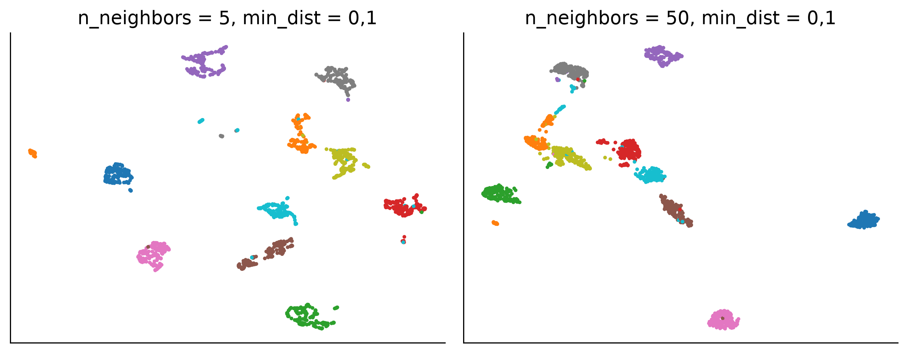
Los dos parámetros son n_neighbors, que controla el tamaño del vecindario, y min_dist, que controla la separación mínima en el plano. En un mapa de UMAP o \(t\)-SNE son interpretables las distancias entre puntos vecinos; no lo son la distancia entre grupos lejanos ni el tamaño y la densidad de los grupos; el número de grupos depende de los parámetros; los ejes no tienen significado; el resultado depende de la semilla; UMAP admite aplicarse a datos nuevos y \(t\)-SNE no. Esta última propiedad determina si el método sirve dentro de un flujo de predicción. Los métodos que no admiten datos nuevos son instrumentos de exploración y no pueden formar parte de un Pipeline evaluado por validación cruzada.
3.12 Efectos lineales y no lineales
Un modelo es lineal en los parámetros si \(f(\mathbf{x}) = \sum_{j} \beta_j \phi_j(\mathbf{x})\), cualquiera sea la forma de las funciones base \(\phi_j\). Las bases habituales son la polinomial (\(1, x, \ldots, x^d\), global, oscila en los extremos), la constante por tramos, los splines cúbicos (tramos cúbicos con dos derivadas continuas, locales y suaves), los splines naturales (lineales fuera de los nodos extremos), los kernels gaussianos y las interacciones \(x_j x_k\). La regresión sobre una base sigue siendo un problema de mínimos cuadrados lineales, de modo que toda la teoría lineal continúa siendo aplicable.
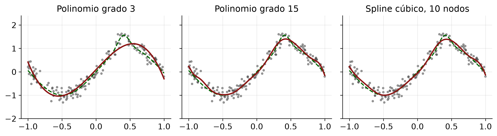
Si el algoritmo depende de los datos sólo por productos internos, sustituirlos por un kernel \(K(\mathbf{x}_i, \mathbf{x}_j) = \langle \varphi(\mathbf{x}_i), \varphi(\mathbf{x}_j)\rangle\) define implícitamente una base de dimensión posiblemente infinita, y el teorema del representante garantiza que la solución tiene la forma \(\hat{f}(\mathbf{x}) = \sum_{i=1}^{n}\alpha_i K(\mathbf{x}_i, \mathbf{x})\), de modo que el problema es de dimensión \(n\). Los modelos aditivos generalizados, \(g(\mathbb{E}[Y \mid \mathbf{x}]) = \beta_0 + \sum_j f_j(x_j)\) con cada \(f_j\) un spline penalizado, ofrecen la alternativa interpretable, con el efecto de cada variable por separado y sin las interacciones no declaradas.
4 Errores frecuentes
| Error | Síntoma | Corrección |
|---|---|---|
| Escalar antes de particionar | Error de validación optimista | Todo dentro del Pipeline |
| Imputar con la media | Varianza y correlación reducidas | Imputación iterativa o múltiple |
| Codificar por objetivo sin pliegues | Desempeño no reproducible | Estimar dentro del pliegue |
| Partición aleatoria en series | Error de validación optimista | Partición por bloques temporales |
| Balancear antes de particionar | Duplicados entre conjuntos | Remuestrear sólo el entrenamiento |
| PCA sin estandarizar | La variable de mayor escala domina | Estandarizar salvo unidades comunes |
| Elegir \(k\) mirando el desempeño final | Estimación sesgada | Validación cruzada anidada |
| Interpretar \(t\)-SNE cuantitativamente | Conclusiones sobre distancias | Volver al espacio original |
5 El caso inicial, con los criterios de la clase
El análisis previo al lanzamiento del Challenger admite un diagnóstico en tres puntos, uno por bloque. En visualización, el gráfico pertinente incorporaba los veintitrés vuelos con la temperatura asignada al canal de posición. En preprocesamiento, el filtrado de filas es una operación de preparación de datos y determina qué puede observar el análisis, de modo que la exigencia de registrar cada decisión alcanza también a los filtros. En extrapolación, la temperatura pronosticada quedaba fuera del rango de los datos disponibles, condición bajo la cual ningún modelo ajustado sobre ellos tiene soporte.
Las dos reglas de la clase quedan así. La variable que porta la conclusión se asigna al canal perceptual más preciso, y todo paso que estima parámetros a partir de los datos pertenece al modelo y se ajusta únicamente en entrenamiento.
6 Referencias
- Wilkinson, L. (2005). The Grammar of Graphics, 2.ª ed. Springer.
- Cleveland, W. S., McGill, R. (1984). Graphical perception. Journal of the American Statistical Association, 79(387), 531-554.
- Cleveland, R. B. et al. (1990). STL: a seasonal-trend decomposition procedure based on loess. Journal of Official Statistics, 6(1), 3-73.
- van der Maaten, L., Hinton, G. (2008). Visualizing data using t-SNE. Journal of Machine Learning Research, 9, 2579-2605.
- McInnes, L., Healy, J., Melville, J. (2018). UMAP: uniform manifold approximation and projection. arXiv:1802.03426.
- Rubin, D. B. (1987). Multiple Imputation for Nonresponse in Surveys. Wiley.
- Tibshirani, R. (1996). Regression shrinkage and selection via the lasso. JRSS B, 58(1), 267-288.
- Meinshausen, N., Bühlmann, P. (2010). Stability selection. JRSS B, 72(4), 417-473.
- Horn, J. L. (1965). A rationale and test for the number of factors in factor analysis. Psychometrika, 30(2), 179-185.
- Hastie, T., Tibshirani, R., Friedman, J. (2009). The Elements of Statistical Learning, 2.ª ed. Springer.
- Kaufman, S., Rosset, S., Perlich, C. (2012). Leakage in data mining. ACM TKDD, 6(4).
- Dalal, S. R., Fowlkes, E. B., Hoadley, B. (1989). Risk analysis of the space shuttle. Journal of the American Statistical Association, 84(408), 945-957.